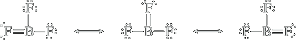

Covalent Bonding
The idea of the covalent bond was first suggested by the American physical chemist Gilbert Newton Lewis (1875–1946) in 1916. He pointed out that the electron configuration of the noble gases appears to be a particularly stable one. Noble-gas atoms are themselves extremely unreactive. Moreover, a great many monoatomic ions have noble-gas structures. Lewis suggested that nonmetal atoms, by sharing electrons to form an electron-pair bond, can aqcuire a stable noble-gas structure.
Consider for example, two hydrogen atoms, each with one electron. The process by which they combine to form an H2 molecule
| H⋅ | + | H⋅ | ⟶ | H−H | ΔH = −436 kJ/mol |
Each hydrogen atom has one electron. When these electrons are shared to form a bond, there is a decrease in energy, indicated by the negative value of ΔH. The energy diagram in Figure 1 plots the energy of the two hydrogen atoms as a function of the distance between them. Focus on the right side of the diagram, which represents the hydrogen atoms separated by a large distance. Moving toward the left on the diagram, the hydrogen atoms approach each other, and there are several forces that must be taken into account: (1) the force of repulsion between the two negatively charged electrons, (2) the force of repulsion between the two positively charged nuclei, and (3) the forces of attraction between the positively charged nuclei and the negatively charged electrons. As the hydrogen atoms get closer to each other, all of these forces get stronger. Under these circumstances, the electrons are capable of moving in such a way so as to minimize the repulsive forces between them while maximizing their attractive forces with the nuclei. This provides for a net force of attraction, which lowers the energy of the system. As the hydrogen atoms move still closer together, the energy continues to be lowered until the nuclei achieve a separation (internuclear distance) of 0.74 angstroms (Å). At that point, the force of repulsion between the nuclei begins to overwhelm the forces of attraction, causing the energy of the system to increase if the atoms are brought any closer together. The lowest point on the curve represents the lowest energy (most stable) state. This state determines both the bond length (0.74 Å) and the bond strength (436 kJ/mol).
Gli elettroni condivisi dai due atomi appartengono indistamente ad entrambi.
La condizione indispensabili per la formazione del legame di valenza è quindi la presenza di elettroni spaiati negli orbitali. Non esistono infatti molecole di Ca2 o Ne2. Vediamo la formazione del legame covalente nel caso della molecola di fluoro. L'atomo di Fluoro ha la seguente configurazione elettronica:
| 2p | ↓ ↑ | ↓ ↑ | ↑ |
|---|---|---|---|
| 2s | ↓ ↑ | ||
| 1s | ↓ ↑ |
la formazione di un legame semplice tra i due atomi di fluoro è reso possibile dall'accopiamento dei due elettroni spaiati 2p.
i colori giallo e azzurro, rappresentano la fase degli orbitali.
Legami multipli
Consideriamo ora la molecola di azoto N2, con configurazione elettronica:
| 2p | ↑ | ↑ | ↑ |
|---|---|---|---|
| 2s | ↑↓ | ||
| 1s | ↑↓ |
con tre elettroni spaiati, è possibile giustificare la formazione di tre legami covalenti tramite la sovrapposizione degli orbitali 2px, 2py, 2pz. Il legame fra gli atomi è tanto più forte, maggiore è la sovrapposizione degli orbitali atomici. Quando si ha la sovrapposizione di due orbitali di dipo s o di tipo p, la sovrapposizione avviene lungo l'asse congiungente i due nuclei, il legame è detto legame σ.
Se invece a sovrapporsi sono due orbitali py o pz, il legame che deriva da tale sovrapposizione è detto legame π.
Nel caso della molecola di azoto la sovrapposizione dei due orbitali 2px porta alla formazione di un legame σ mentre la sovrapposizione dei 2pz e dei 2py a due legami π. Complessivamente si ha un triplo legame.
Quando si ha la formazione di un legame semplice questo è sempre di tipo σ, mentre la formazione di legami multipli, richiede l'instaurarsi di un legame di tipo σ e di legami π.
Drawing the Lewis Structure of an Atom
Nel 1916 gli scienziati W.Kossel e G.N. Lewis proposero indipendentemente che gli atomi tendessero a legarsi tra loro in modo da ottenere la configurazione elettronica di un gas inerte. Questa teoria del legame rimase fortemente associata a Lewis ed è per questo nota come teoria di Lewis. Vediamo gli aspetti più importanti di questo modello:
Sono gli elettroni di valenza as essere coinvolti nel legame chimico;
Il legame covalente può formarsi tra atomi dello stesso elemento o atomi di elementi differenti nel primo caso si parla di legame covalente omopolare; nel secondo di legame covalente eteropolare;
In alcuni casi, vi può essere un trasferimento degli elettroini da un atomo all'altro. Ne derivano atomi carichi negativamente (anioni) e atomi carichi positivamente (cationi) che internagiscono tramite forze elettrostatiche. Questo legame è detto legame ionico;
Gli elettroni vengono trasferiti o condvisi in modo tale che ciascun atomo acquisisca una configurazione elettronica stabile, generalmente quella del gas nobile più vicinino, avente 8 elettroni nel guscio esterno. Questa regola è nota come regola dell'ottetto.
Per descrivere la formazione di un legame si utilizza la simbologgia di Lewis, che si basa sul fatto che le proprietà chimiche di un atomo sono funzione delle configurazione elettronica esterna.
Secondo tale simbilismo, quando si ha la formazione di uno ione:
Na⋅ ⟶ [Na]+ + e−
Homopolar covalent bond
Secondo la regola dell'ottetto nella formazione di un legame covalente ciascuno atomo tende a raggiungere la configurazione elettronica del gas inerte più vicino. Consideriamo ad esempio la formazione della molecola di idrogeno H2, ciascun atomo di H condividendo l'unico elettrone in possesso raggiunge la configurazione elettronica dell'elio:
H⋅ + ⋅H ⟶ H:H or H−H
La condivisione della coppia elettronica permettere di ottenere un'elevata stabilità se si considera l'alto valore dell'energia di legame intor a 436 kJmol-1. Il legame covalente che si stabilisce tra atomi dello stesso elemento è detto omopolare. Altri esempi sono la molecola di Cloro e ossigeno:
Quando gli atomi condividono una sola coppia elettronica, il legame è detto legame semplice. Se due atomi condividono due coppie elettroniche questo è detto legame doppio, indicato con =, come nell'ossigeno; Condividendono tre coppie elettroniche, si ha un legame triplo, questo è il caso dell'azoto:
Si noti come nella struttura di Lewis dell'azoto, sono presenti otto elettroni di valenza, 6 elettroni di legame ed un lone pair. Le coppie elettroniche non condivise vengono dette lone pairs.
Eteropolar covalent bond
L'atomo di cloro, Cl, possiede un'elevata tendenza ad ottenere un elettrone come indicato dal valore dell'affinità elettronica pari a −349 kJmol−1. I metalli invece così come l'idrogeno hanno un'elevata energia di ionizzazione tendono quindi a perdere un elettrone. Ad esempio per l'idrogeno si ha una valore di 1312 kJ mol−1, mentre per il litio di 519 kJ mol-1. Nessuno dei due atomi cede un elettrone spontaneamente ma il litio ha un'energia di ionizzazoine minore, quindi cede l'elettrone più facilmente ed ha un carattere più metallico rispetto l'idrogeno, considerato infatti un non metallo.
Secondo la regola dell'ottetto nella formazione di un legame covalente ciascuno atomo tende a raggiungere la configurazione elettronica del gas ideale più vicino. Consideriamo ad esempio la formazione della molecola di acido cloridrico:
l'H mette in condivisione il suo unico elettrone con il cloro raggiungendo la configurazione elettronica esterna dell'elio, mentre il cloro mettendo in condivisione il suo elettrone raggiunge la configurazione elettronica dell'argon.
Quando il legame covalente si forma tra atomi di elementi diversi è detto legame eteropolare. La maggior parte delle sostanze presenti in natura sono eteropolari come l'acqua:

o il monossido didicloro:
ammonia:

Exceptions to the Octet Rule
The exceptions in which the central atom has more than eight valence electrons around it are fairly numerous. The octet rule is certainly a pattern of second row atoms, when only four valence atomic orbitals per atom can participate in bonding (having only one 2s and three 2p orbitals available for bonding). Elements of the second period are restricted to these orbitals, but from the third period on, the elements also have unfilled nd orbitals, which may be used in bonding. For example, the valence-shell configuration of phosphorus is 3s23p3. Using just these 3s and 3p orbitals, the phosphorus atom can accept only three additional electrons, forming three covalent bonds (as in PF3). However, more bonds can be formed if the empty 3d orbitals of the atom are used. If each of the five electrons of the phosphorus atom is paired with unpaired electrons of fluorine atoms, PF5 (and PCl5) can be formed. In this way, phosphorus forms both the trifluoride and the pentafluoride. By contrast, nitrogen (which has no available d orbitals in its valence shell) forms only the trifluoride, NF3.
A ball-and-stick molecular model.
The octet rule, therefore, only applies to second row elements but even here, fewer than eight electrons are possible: Boron and Beylium tend to form compounds in which they have fewer than eight electrons around them.

H−Be−H
Be has 4 electrons
Boron trifluoride, as BH3 has only 6 electrons in the valence shell. BF3, a gas at normal temperatures and pressures, reacts very energetically with molecules such as water and ammonia that have available electron pairs (lone pairs). The violent reactivity of BF3 with electron-rich molecules arises because the boron atom is electron-deficient.
We actually can satisfy the octet rule for B in BF3 by using a lone pair on one of the F atoms to form a double bond between the F atom and B. This gives rise to three additional resonance structures:
Although these resonance structures result in B carrying a negative formal charge while F carries a positive formal chare, a situation that is inconsistent with the electronegativities of the atoms involved, the experimentally determined bond lenght in BF3 (130.9 pm) is shorter than a single bond (137.3 pm), which indicates partial double-bond character. The shorter bond length would appear to support the idea behind the three resonance structures.
However, there is evidence to suggest that the first formula written—the one with all single bonds and in which boron has only six electrons around it—describes the chemistry of boron trifluoride very well. For example, boron trifluoride reacts with molecules having a lone pair, such as with ammonia, NH3, to give the compound BF3NH3. The reaction is easy to describe in terms of the formula in which boron has only six electrons around it.
In this reaction, a coordinate covalent bond forms between the boron and nitrogen atoms, and the boron achieves an octet of electrons. The chemistry of BF3 thus appears to support an electron structure with boron having only six electrons around it. No doubt, resonance involving all four of the Lewis formulas that we have drawn best describes the actual electron structure of boron trifluoride, but the relative importance of the different resonance formulas is not settled.